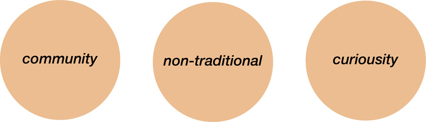
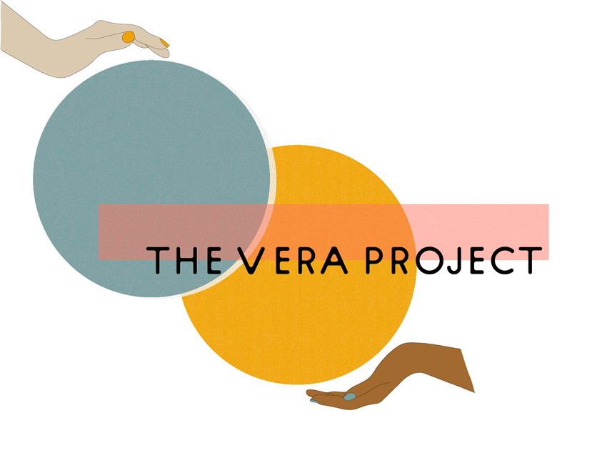
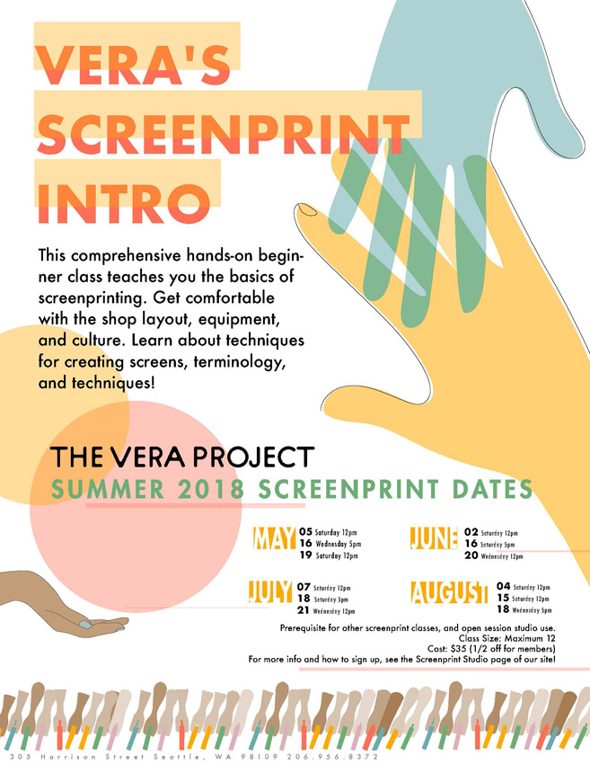
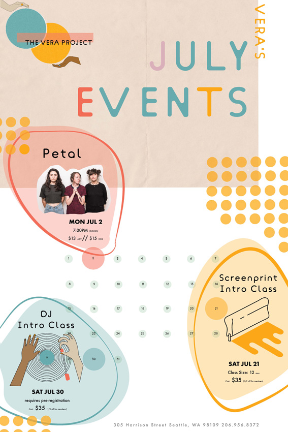

THE VERA PROJECT REBRANDING
HCDE Course Work, 2018
The goal of this assignment was to develop a new visual language, or brand,
for an existing local organization that more accurately visualizes its communication goals.
I chose The Vera Project, which is a non-profit arts organization for young adults.
As part of the assignment, we were asked to create a new logo for the organization,
a redesigned page from their website, a document that contained multiple levels of hierarchy, and a poster
that listed three things that the organization does/sells. We also were asked to create a final presentation
that showcased the visual communication decisions that we made while re-creating the brand.
COMMUNICATION GOALS

THE LOGO
color
primary to emphasize creativity - because there are infinite combinations of the three colors minimally saturated triadic color palate to convey youthfulness muted quality maintains the logo’s sophistication
typeface
sans serif to increase accessibility and the sense of community sans serif type also keeps the logo playful and less traditional
composition
overlap and increased density of the spheres emphasize community, ie different things coming together to create something new. Juxtaposition of abstract flat shapes with dimensional hand drawings bring curiosity to the logo
texture
grainy texture of the circles represent creativity and a deviation from tradition

THE WEBSITE
composition
use of density and dimension evokes curiosity use of overlapping circles and color gives the website a sense of community use of highlight and overlay on the menu bar evoke curiosity and make the site less traditional
texture
wood and paint as background to emphasize elemental media curious and non-traditional
CLASS FLYER
composition
Use of overlap and density invoke a sense of curiosity and deviation from the norm. Overlap of yellow and blue hands coming together to create something new. Yellow and blue hands come together to make green. Use of cropping and the inclusion of both left and right aligned text gives the impression of a non-traditional brand identity.
typography
bold, light, and condensed text are all used to emphasize higherarchy. Integration of circles and sans serif type faces represent community and inclusivity.
EVENT POSTER
composition
The overlap and density created by the textured background and transparency signify the non-traditional nature of the organization. The overlap of the events with the calendar creates a sense of community which is central to the vera project.
colors
primary/triadic color scheme evokes a feeling of playful sophistication that is central to the vera project's brand identity.
